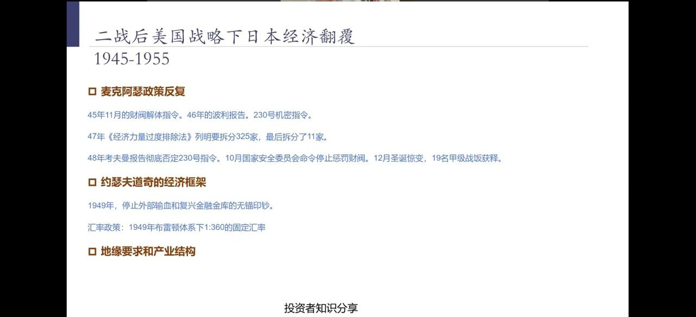
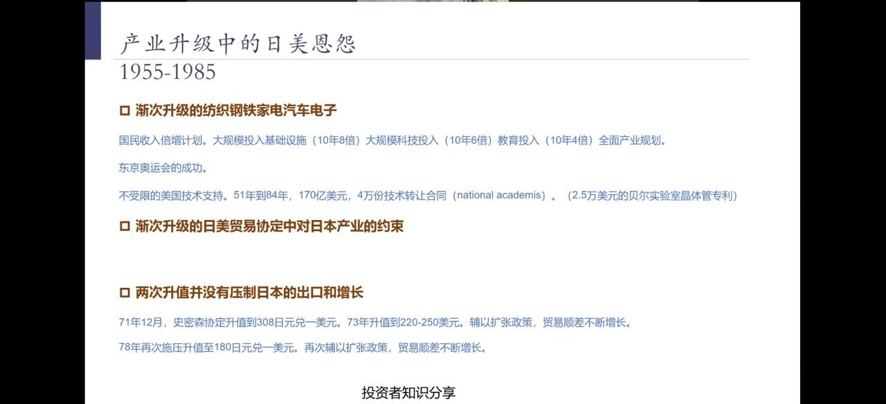
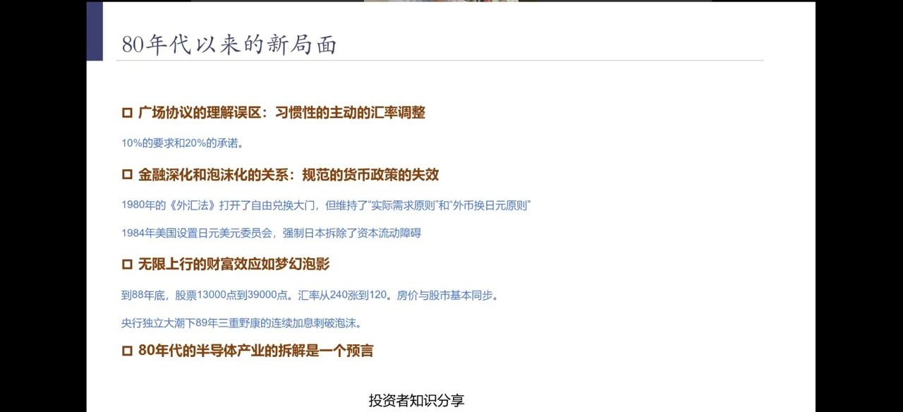
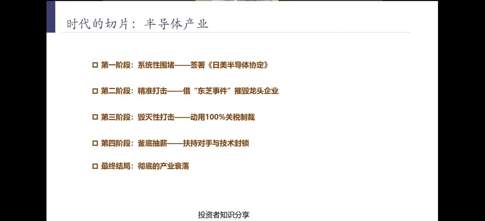
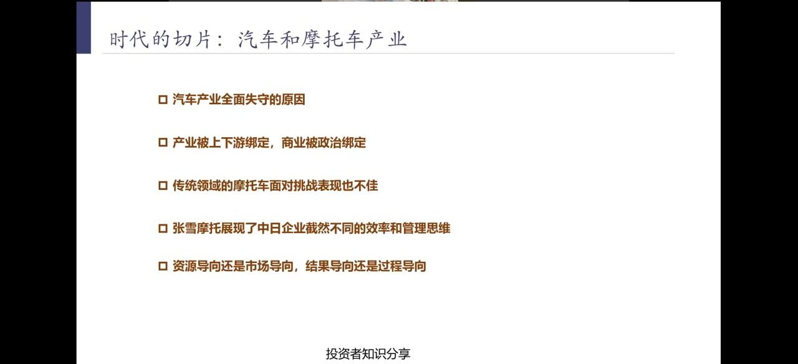
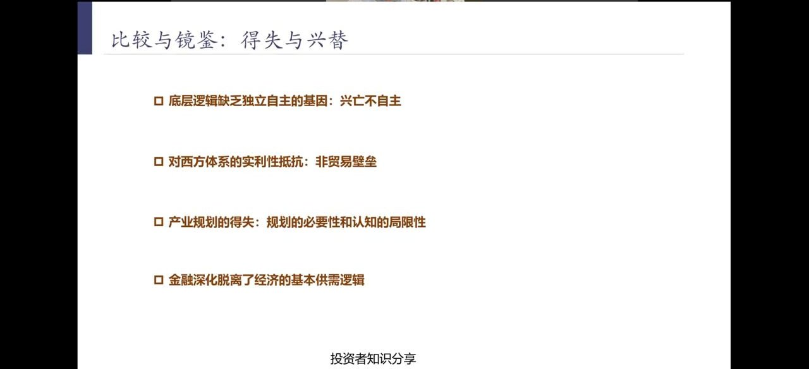

为什么谈日本
陈鹏说明选这个主题的三个现实由头：
- 三年以来：媒体经济学家们盛行的"中日对比"——辜朝明资产负债表衰退、中国会不会重蹈日本覆辙。
- 今年以来：五常四国来访、G7六国来访中国，唯独日本缺席。
- 当下局面：悬崖边上的日本汇率——为守住160附近的日元，日本已消耗700余亿美元外汇储备。
中国学界观察日本经历了三个阶段：2008年前学日本先进经验；2010年中国GDP超日本后研究其"长期停滞"；2023年以来大量做中日对比——三个阶段折射的是中日力量对比与心态变化。
战后翻覆：美国战略下的日本 1945—1955

日本战后经济的起点，完全绑在美国的地缘战略上，政策反复极具戏剧性：
麦克阿瑟政策反复
- 45年11月：财阀解体指令；46年"波利报告"、230号机密指令。
- 47年《经济力量过度排除法》列明要拆325家，最后只拆了11家。
- 48年考夫曼报告彻底否定230号指令；10月国安会命令停止惩罚财阀；12月"圣诞惊变"，19名甲级战犯获释。
道奇的经济框架
- 1949年：停止外部输血，复兴金融金库的无锚印钞。
- 汇率政策：1949年布雷顿森林体系下1:360的固定汇率。
转折点是冷战爆发与中国局势明朗：美国把日本从"被改造的战败国"改造成"远东桥头堡"。随后朝鲜战争特需订单（30余亿美元）让日本快速回血，1955年即恢复到战前最高水平。这一阶段日本经济完全依附美国地缘与意识形态需求，经济主权独立性极差。
产业升级中的日美恩怨 1955—1985

这是日本经济的黄金期，也是"依附式增长"的完整样本：
渐次升级：纺织→钢铁→家电→汽车→电子
- 国民收入倍增计划：大规模投基建（10年8倍）、科技投入（10年6倍）、教育投入（10年4倍），配合东京奥运会的成功。
- 不受限的美国技术支持：1951—1984年，170亿美元、4万份技术转让合同（如2.5万美元买下贝尔实验室晶体管专利）。
每升级一次，就被美国逼签一次自限协定
日本的优势产业按阶梯崛起后，每一轮都被美国逼迫签署"自愿出口限制"贸易协定，长期下来日本习惯了配合美方让利。
两次升值并未压垮出口：1971年12月史密森协定升值到308日元/美元，73年升到220—250；78年再压到180。两次都辅以扩张政策，贸易顺差不降反增。正是这两次"成功经验"，让日本后来爽快答应了广场协议——这是后话。
80年代新局面：广场协议、金融深化与泡沫

陈鹏纠正了一个流行误解：广场协议不是美国单方面逼出来的，而是日本基于旧经验"习惯性主动"同意的。
- 广场协议的理解误区：10%的要求、20%的承诺——日本爽快答应了20%升值。
- 金融深化和泡沫化的关系：1980年《外汇法》打开自由兑换，但维持"实际需求原则"；1984年美国设置日美日元美元委员会，强制日本拆除资本流动障碍。
关键差异：前两次升值时，日本资本项目是管制的，热钱进不来；这一次（1984年）美国已强制其拆除资本流动障碍，升值预期引来海量热钱。到1988年底，股票从13000点涨到39000点，汇率从240涨到120，房价与股市同步——全民癫狂、无心实业。1989年央行独立大潮下，新行长三重野康连续加息刺破泡沫。
陈鹏特别点出：80年代对日本半导体产业的拆解，是一个"预言"——后来被原样复制到今天对中国的打法。
时代切片一：半导体产业被拆解

苏联解体后，日本失去了"冷战前沿"的利用价值，美国不再让渡技术与市场，转而系统性拆解：
- 第一阶段：系统性围堵——签署《日美半导体协定》。
- 第二阶段：精准打击——借"东芝事件"摧毁龙头企业。
- 第三阶段：毁灭性打击——动用100%关税制裁。
- 第四阶段：釜底抽薪——扶持韩国对手与技术封锁。
- 最终结局：彻底的产业衰落。
结果触目惊心：日本半导体全球份额从1990年的49%跌到如今不足10%；全球前十半导体企业从6家日本变成0家。这套"协定→事件→关税→扶持对手"的组合拳，正是今天美国对华半导体战略的模板。
新世纪的挣扎：创新屡败与产业能力丧失
半导体失势后，日本试图在新赛道找回场子，却一再失败：
- 家电、面板、消费电子的余晖——老优势产业逐一退场。
- 屡屡失败的创新：氢能源、等离子、β制式录像带——路径依赖、市场话语权缺失。
- 产业能力的丧失：从钢铁、化工、造船，一路退到现在的汽车。
- 财阀体系的优劣势：早年举国之力+美国大市场是优势；出口独占性消失后，政商绑定的僵化反而成了包袱。
时代切片二：汽车与摩托车产业失守

汽车是日本最后的王牌，却也全面失守：
- 汽车产业全面失守的原因——被燃油车上下游产业链绑死，转型新能源车越投入越亏损。
- 产业被上下游绑定，商业被政治绑定——选票政治让财阀难以彻底转身。
- 传统领域的摩托车面对挑战也不佳。
张雪摩托案例：日本车手提的改进意见，内部流程冗长、数月无反馈；而中国企业能在1个月内完成迭代落地——这是"资源导向/过程导向"与"市场导向/结果导向"的根本差距。
比较与镜鉴：得失与兴替

陈鹏总结日本教训的四个层面：
- 底层逻辑缺乏独立自主的基因：兴亡不自主——被迫签各种不平等限制协定，无法自主制定发展策略。
- 对西方体系的实利性抵抗：非贸易壁垒——美国打日本用的从来不是关税，而是协定、事件、制裁这类非贸易手段。
- 产业规划的得失：规划有必要性，但也有认知局限；外部支撑消失后，日本找不到新方向。
- 金融深化脱离了经济的基本供需逻辑——金融若不为实体服务、脱离基本供需，就会催生无法自洽的泡沫。
所谓"独立自主"，不是事事完全自给自足，而是遇到外部冲击时能自主从容应对、不被迫签城下之盟。
截然不同的未来：中国为何不会重演
针对"中国会走日本老路"的担忧，陈鹏列出五条本质差异：
- 天花板的有无：日本产业升级被美国锁死；中国在卡脖子领域快速突破，没有外部天花板。
- 对自我的清醒认知：中国在房地产泡沫萌芽期就推"房住不炒"，16—17年资本外逃抬头时及时收紧兑换。
- 审慎的金融深化：不盲目拆除资本管制、审慎推进人民币国际化。
- 截然不同的经济纵深：完整工业体系+超大国内市场，小经济体嵌入大体系才能活，中国本身就是大体系。
- 党的领导：经济手段不够时，能用政策统筹协调保障长期方向。
当前美国对华打法存在明显路径依赖——长期想照搬当年对付日本的手段逼人民币升值，又纠结于升值会让中国GDP反超自己；最终发现老手段完全不适用。27—28年前后，全球叙事将完成切换：中国不再跟随任何外部路径，走出自己的独立模式。
回头看：资产负债表衰退？失去30年？
收尾回应两个流行标签：
- 资产负债表衰退？——辜朝明的理论描述的是结果，而非原因。日本衰退是主权不独立+产业被锁死+体系僵化多重问题叠加的产物，中国前置风险已被政策化解，不能简单套用。
- 失去30年？——那是日本在外部天花板下的宿命，中国没有这个天花板。
感谢开国领袖们建设的国家与民族的精神基础——独立自主，为人民服务，实事求是，自信自强。这是中国"知兴替、明得失"后不走日本老路的根本底气。